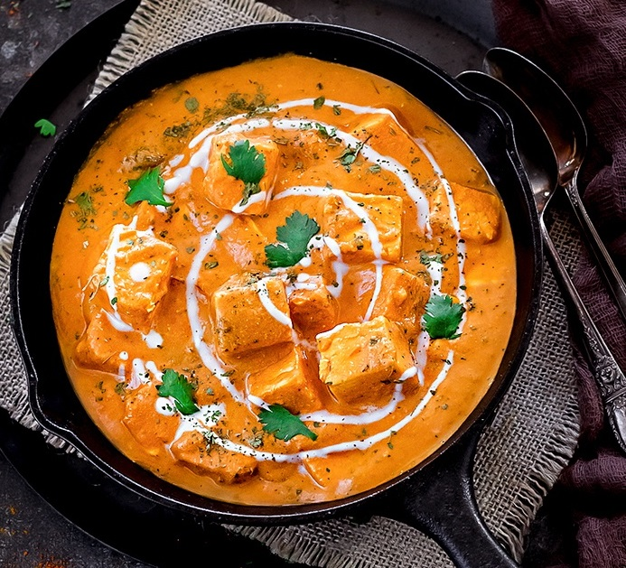

Odin Recipes
Home
Paneer Butter Masala
Paneer Butter Masala is a rich and creamy North Indian dish made with soft paneer cooked in a mildly spiced tomato and butter gravy. It pairs wonderfully with naan, roti, or rice.

Ingredients
- 250 g paneer, cubed
- 2 tbsp butter
- 1 tbsp oil
- 3–4 garlic cloves, minced
- 2 tomatoes, chopped
- 1 onion, chopped
- 1 tsp ginger-garlic paste
- ½ tsp turmeric
- 1 tsp red chili powder
- 1 tsp garam masala
- ½ tsp cumin
- ½ cup cream
- Salt to taste
- 1 tsp kasuri methi
- Fresh coriander for garnish
Steps
-
Heat butter and oil in a pan. Add cumin, onion, and ginger-garlic paste. Sauté until the onion turns golden.
-
Add tomatoes, turmeric, chili powder, and salt. Cook until the tomatoes become soft.
-
Blend the mixture into a smooth paste and return it to the pan.
-
Add a little water and simmer for 5–7 minutes.
-
Add paneer, garam masala, cream, and kasuri methi. Cook for another 3–4 minutes.
-
Garnish with fresh coriander and serve hot.